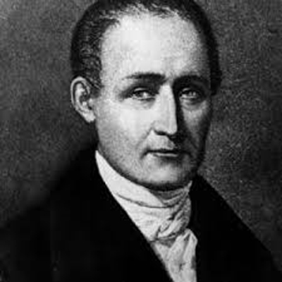
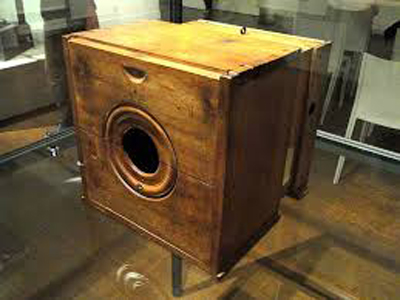
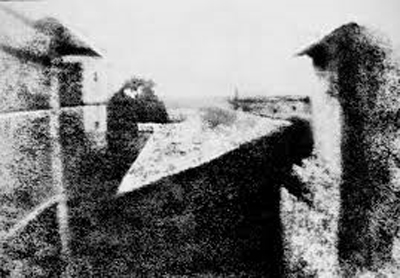
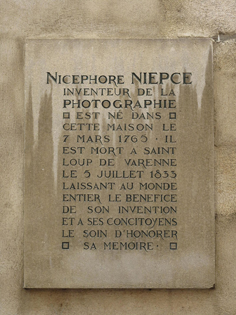

Rubrique Culture

Nicéphore Niépce inventeur de la photographie Joseph Nicéphore Niépce 1765 /1833 Ingénieur français, connu comme étant l'inventeur de la photographie appelée alors « procédé héliographique » Il est aussi l'auteur de la plus ancienne prise de vue et du pyréolophore, le premier moteur à combustion du monde.  Joseph Nicéphore Niépce  Chambre noire de Nicéphore Niépce / 1820.  Point de vue de la fenêtre, la plus ancienne photographie conservée, réalisée par Nicéphore Niépce en 1827.  Plaque sur sa maison natale, Châlon sur Saône (71) 
|